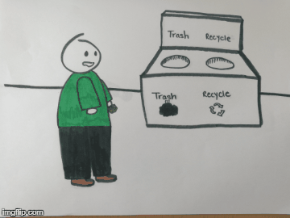

Recycle Properly with Homie

CREDITS:
Blank Canvas - Esme Chen
Recycle Properly with Homie
Tips on Recycling:
- Don’t put recyclable materials in plastic bags because they jam recycling equipment. Instead, wrap recyclable materials in
- Don’t recycle wet cardboard. It can clog sorting machines. If it is wet, throw it away.
- Don’t recycle bottle tops; they’re not made from the same plastic as recyclable bottles. But if you recycle them with the rest, it’s okay because they’ll be sorted later.
- Rinse cans, but you don’t have to crush them.
- Don’t worry if you don’t get all the product like peanut butter out of the container because the recycler’s machinery will zap all contaminants, but do empty and rinse the glass jars and containers.
What can you recycle?
- Metals
- Aluminum cans
- Aluminum foil & bakeware
- Steel & tin cans
- Paper and Cardboard
- Corrugated cardboard
- Magazines
- Office paper
- Newspapers
- Paperboard
- Dairy and Juice Cartons
- Phone books
- Glass
- Clear (flint) glass
- Brown (amber) glass
- Green (emerald) glass
- Don’t Recycle Glass That Is
- Any glass contaminated with stones, dirt, and food waste
- Ceramics, such as dishware, ovenware, and decorative items.
- Heat-resistant glass, such as Pyrex.
- Mixed colors of broken glass.
- Mirror or window glass.
- Metal or plastic caps and lids.
- Crystal.
- Light bulbs.
- Cathode-ray tubes (CRTs) found in some televisions and computer monitors.
- Plastics
- Make sure it is clean
- Don’t look at code to see if recyclable - the code is not reliable
- Look at shape: bottles, jars, and jugs are okay
- Batteries
- Car batteries
- Rechargeable batteries
- Household batteries
- Incandescent and LED batteries
- Fluorescent bulb batteries
- Electronics
- Computers
- Office equipment
- Televisions
- Consumer electronics
- Cell phones
- Unacceptable Electronics
- Microwaves
- Smoke Alarms/Detectors
- Fire Alarms/Detectors
- Thermometers
- Large Appliances (Refrigerators, etc.)
- Non-Decontaminated Medical Equipment
- Any unit with Sludge or Liquids
Do you ever wonder what the acronyms on containers mean?
They signify what the material will be in its next lifetime.
- PET (polyethylene terephthalate): Soda bottles; recycled into pillow fill.
- HDPE (high-density polyethylene): Plastic milk bottles, detergent bottles; recycled into new detergent bottles.
- PVC (polyvinyl chloride): Take-out boxes, shampoo; recycled into drainage and irrigation pipes.
- LDPE (low-density polyethylene): Grocery bags, shrink wrap; recycled into new bags.
- PP (polypropylene): Yogurt containers, bottle caps; recycled into plastic lumber.
- PS (polystyrene): Packing peanuts; recycled into plastic lumber, cassette-tape boxes.
- Other: Includes squeezable ketchup bottles and microwavable dishes; these items can’t be recycled.